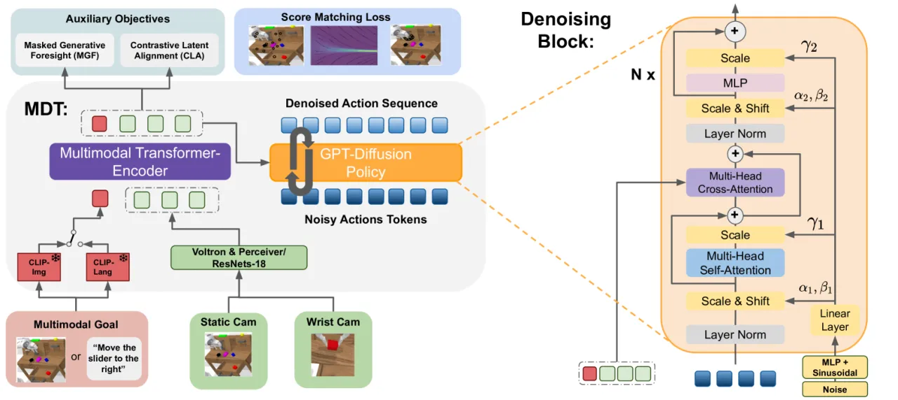
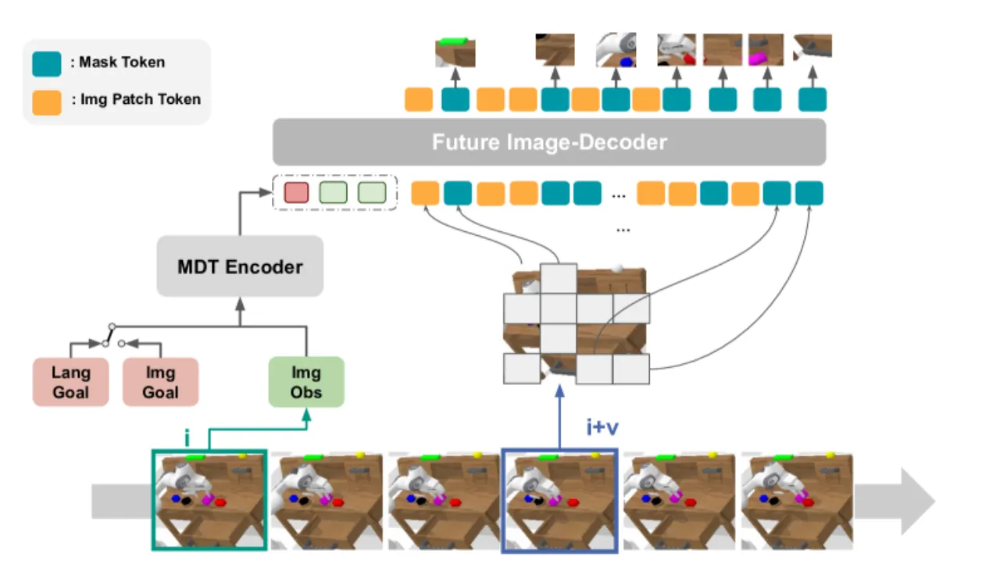
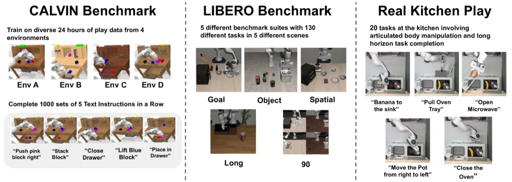
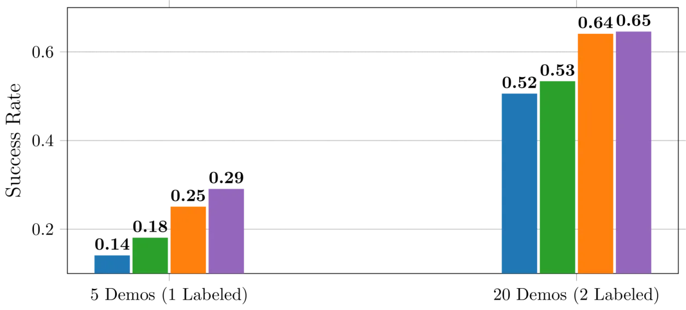

MDT（Multimodal Diffusion Transformer）提出了一种基于扩散模型的机器人操作策略框架，能够同时接受图像目标和语言目标作为条件，仅需极少量的语言标注（2%）便可超越全标注 baseline。两个核心辅助任务——Masked Generative Foresight（MGF）和 Contrastive Latent Alignment（CLA）——通过自监督方式对齐多模态表征，在 CALVIN 和 LIBERO 基准上均取得当时最优性能。
现实中的机器人示教数据往往只有图像目标，语言标注极为稀缺。如何在只有少量语言标注的情况下，让策略同时支持图像目标和语言目标的条件输入，是构建通用机器人操作系统的核心挑战。
"We propose a multimodal diffusion policy that learns robot manipulation behaviors from multimodal goals with few language annotations."

在大多数现实数据集中，语言指令只覆盖小部分演示，而图像目标（goal image）则可以免标注地从轨迹末帧获取。MDT 通过同时支持两种目标模态，充分利用了这类不完整标注数据集。与依赖大规模预训练（如 RoboFlamingo）的方法相比，MDT 无需预训练，参数量更少，却取得更好的效果。
MDT 由多模态 Transformer Encoder 和扩散式 Decoder 组成，通过两个自监督辅助目标——Masked Generative Foresight（MGF）和 Contrastive Latent Alignment（CLA）——在极少语言标注下学习统一的多模态目标条件策略。
Encoder 使用冻结的 CLIP 文本编码器处理语言目标，使用 ResNet 编码当前观测和图像目标，并融合为统一的 latent goal-conditioned state representation。Decoder 为 GPT 风格的因果 Transformer，通过 Adaptive Layer Normalization（AdaLN）注入扩散时间步噪声，迭代去噪生成长度为 10 的动作序列。训练采用连续时间 SDE，噪声范围为 [0.001, 80]；推理使用 10 步 DDIM 采样。
MGF 是一个自监督辅助任务：用 Vision Transformer 在当前观测的 latent 表征条件下，预测并重建未来第 v 步（论文设 v=3）帧的被遮挡 patch（masking ratio=0.75）。这迫使 encoder 学习包含足够未来状态信息的表征，且与目标模态（图像 or 语言）无关，从而对齐两类目标的表征空间。MGF 单独使用即可为 CALVIN 带来约 25% 的性能提升；迁移到 MT-ACT baseline 时，提升达 44%。

CLA 应用 InfoNCE 对比损失，直接拉近同一轨迹中图像目标条件和语言目标条件下的 latent state embedding。这弥补了 CLIP 对空间任务动态理解不足的缺陷。在 LIBERO-90（任务多样性高）子集上，CLA 的增益尤为显著。两个辅助目标的损失权重均设为 α=β=0.1。
CLA 和 MGF 均不依赖动作标签，因此可在无动作标注的视频数据上做预训练。论文在 LIBERO-90 上验证：仅用 5 条带动作演示 fine-tune，预训练版本比随机初始化提升约 100%；用 20 条演示，提升约 25%。
在 CALVIN（长时序多任务操作）和 LIBERO（多任务模仿学习）两个基准上评测，并在真实机器人（toy kitchen，4.5 小时非分段 play data，20% 语言标注）上验证。
| 方法 | D→D Avg | ABCD→D Avg |
|---|---|---|
| HULC | 2.68 | 3.06 |
| LAD | 2.88 | — |
| Distill-D | 2.97 | 3.16 |
| MT-ACT | 2.98 | 2.80 |
| RoboFlamingo | — | 4.09 |
| MDT（ours） | 3.59 | 4.41 |
| MDT-V（ours） | 3.72 | 4.52 |
MDT-V（视频预训练版本）在 ABCD→D 子集达到 4.52 平均链长，较 RoboFlamingo（4.09）提升约 15%；在 D→D 子集超越第二名约 20%。MDT 可训练参数量不足 RoboFlamingo 的 10%，且无需大规模预训练。
| 方法 | Spatial | Object | Goal | LIBERO-90 | 平均 |
|---|---|---|---|---|---|
| Transformer-BC（100% 标注） | 71.8±3.7 | 71.0±7.9 | 76.3±1.3 | 24.2±2.6 | — |
| Distill-D（2%） | 46.8±2.8 | 72.0±6.5 | 63.8±2.5 | 47.3±4.1 | 56.0±3.4 |
| MDT（2%） | 66.0±1.9 | 85.2±2.3 | 67.8±4.6 | 65.0±2.0 | 68.5±9.92 |
| MDT + CLA（2%） | 74.3±0.8 | 87.5±2.7 | 71.5±3.5 | 65.3±2.1 | 73.1±8.81 |
| MDT + MGF（2%） | 67.5±2.1 | 87.5±2.6 | 69.3±2.5 | 63.0±1.7 | 70.0±10.2 |
| MDT + CLA + MGF（2%） | 78.5±1.5 | 87.5±0.9 | 73.5±2.0 | 64.8±0.3 | 74.3±9.13 |
仅用 2% 语言标注，MDT+CLA+MGF 在多个子集上超越使用 100% 标注的 Transformer-BC，平均成功率达 74.3%，比 Distill-D（56.0%）高约 18 个百分点。辅助损失平均带来约 8.5% 的提升。
在真实 toy kitchen 场景下，单任务成功率：MDT-V 58%，MT-ACT 仅 25%。多任务链式完成：带辅助目标的 MDT 平均完成 1.56 步，展现了从非分段、稀疏标注 play 数据中学习多任务策略的能力。


MGF 依赖轨迹中子目标的图像表征来学习未来预测，当任务数据缺乏子目标标注（如 LIBERO-Long）时，辅助任务无法有效发挥作用，该子集上 MGF 带来的提升有限。
MDT 在推理时需要 10 步 DDIM 采样，这使得它比单步策略（如 ACT）慢，在对延迟敏感的实时控制场景中存在瓶颈。
在非分段的稀疏标注 play 数据上，多任务链式完成平均仅 1.56 步，任务之间的转换仍具挑战，作者指出相机位置导致的自遮挡（self-occlusion）是部分失败原因。
MGF 和 CLA 的损失权重均固定为 α=β=0.1，不同任务、数据集下最优权重可能存在差异，自动化调参策略尚未探索。